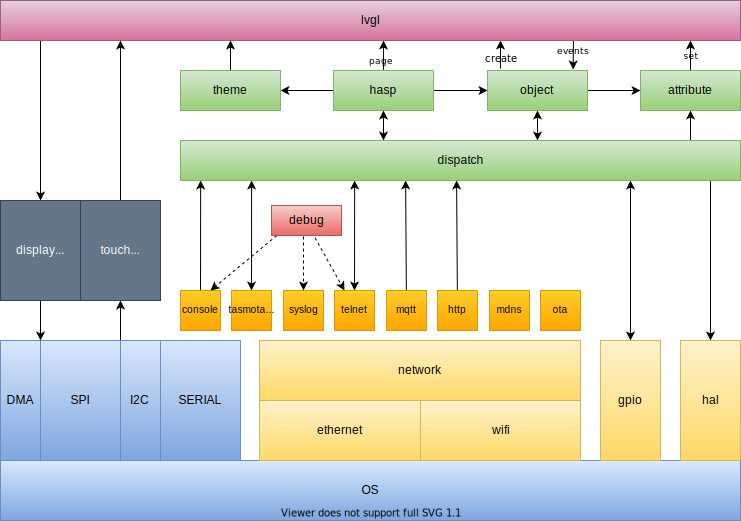

Compiling
Install Visual Studio Code~
Additional packages on Linux:
1 2 | |
Clone openHASP~
Make sure to add the --recursive parameter when cloning the project from GitHub. Otherwise git will not download the required submodules in the /lib subdirectory.
1 | |
If you already cloned openHASP without the submodules, you can fetch the submodules seperately using:
1 | |
To switch to a different branch use:
1 2 3 4 | |
Open in PlatformIO~

Open the project folder in Visual Studio Code. You will receive a popup to install PlatformIO IDE if it is not already installed. This will automatically install all PlatformIO dependencies and the MCU compiler frameworks needed.

Restart Visual Studio Code when the PIO installation completes.
Create a configuration~
Copy platformio_override-template.ini to platformio_override.ini and uncomment the platforms for esp32and esp8266:
1 2 3 4 5 6 | |
Then Click on the "Refresh Project tasks" icon in PlatformIO to list all the configured environments.
Customization~
The file include\user_config_override-template.h lists the options you have to customize your build. Settings applied here will act as factory defaults in the firmware. Some of the available possibilities are:
- WiFi Settings
- MQTT Settings
- OTA Server Settings
- Syslog Settings
- Timezone
- Interface Language
- Web interface coloring
- Built-in fonts choice
- GPIO Templates
Copy it to include\user_config_override.h and change the settins per your needs.
Also uncomment -DUSE_CONFIG_OVERRIDE in platformio_override.ini to ensure that the config overrides are taken into account during the compilation process.
Compiling~
MCU Environments

You can now run "Build" or "Build All" in PlatformIO to compile (all) the firmware.
Native Linux build
For native linux_sdl builds, you also need:
1 2 | |
Native MacOS build
For native darwin_sdl builds, you also need Homebrew:
1 | |
Native Windows build
For native windows_sdl builds, you also need MingW:
Use MSYS2
1 | |
Add the path to your Mingw-w64 bin folder to the Windows PATH environment
variable (usually C:\msys64\mingw64\bin). See instruction, 4.
Block Diagram

MQTT Tests~
To run the tavern testing suite, install the tavern python package and configure test\config.yaml with your broker settings.
1 2 | |